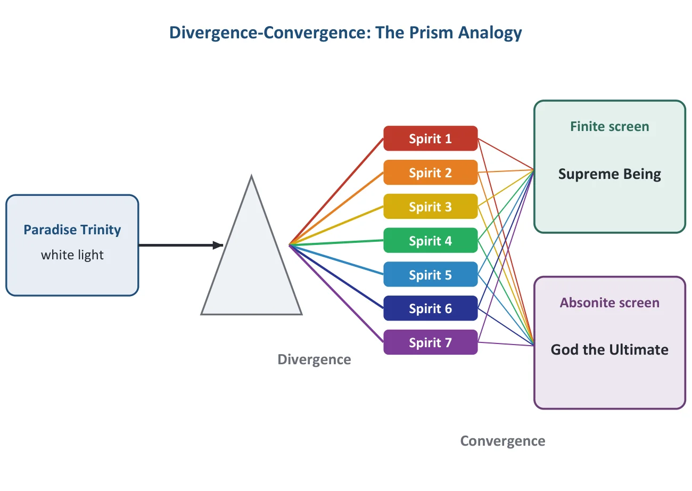
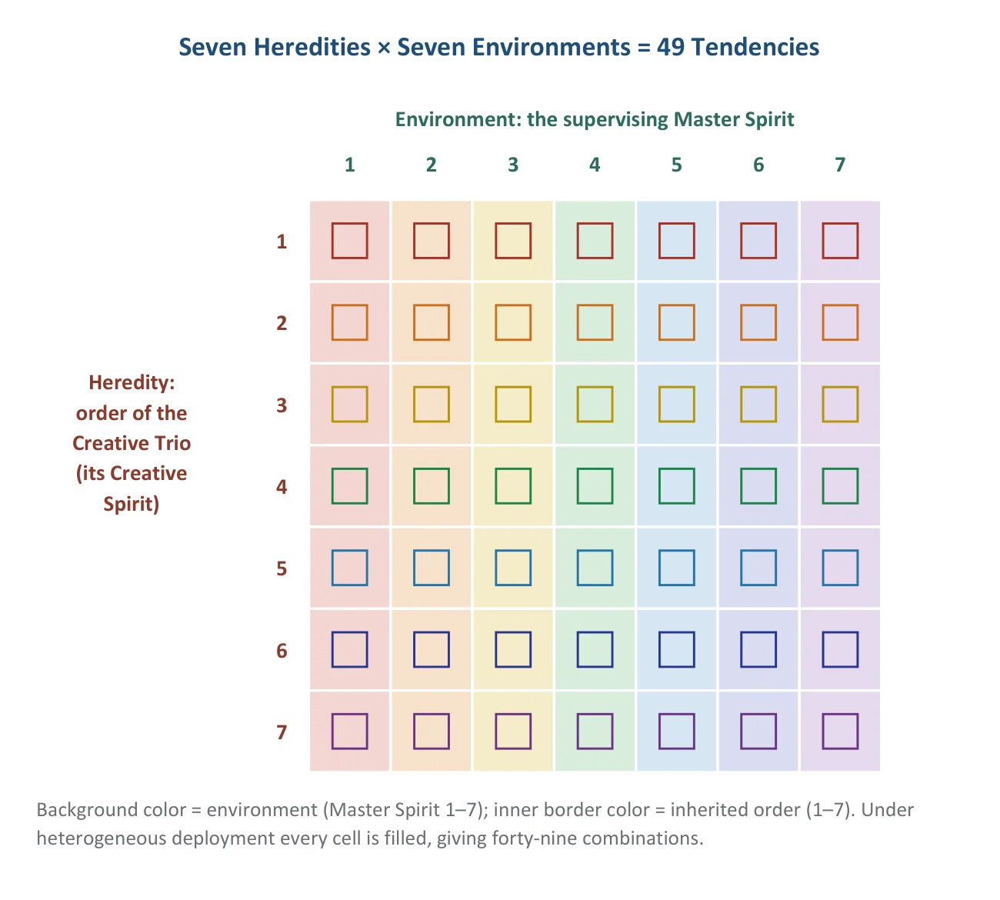

Original: Apêndice XIV, A influência em expansão dos Espíritos Mestres (pp. 348–355)
Os Sete Espíritos Mestres são a primeira expressão da Deidade experiencial e, quando reunidos, abrangem o funcionamento da Supremacia, da Ultimidade e do Supremo-Último. Sadler encontra neles um princípio de “divergência-convergência” e prevê que ele passará das sete culturas dos superuniversos para quarenta e nove ambientes no espaço exterior. A espinha dorsal deste apêndice é tríplice: um esboço numérico da administração do Nível Espacial Primário, a correspondência entre as potências de sete e os números dos Arquitetos Mestres, e os “quarenta e nove pontos de vista” dos Conciliadores Universais.
Os Espíritos Mestres são o primeiro ato do Espírito Infinito “como Deidade criadora” [9:8.2] e, quando reunidos, abrangem o domínio funcional do Supremo-Último no universo-mestre.
Para todos os propósitos e intentos práticos, os Sete Espíritos Mestres compreendem, ali e naquele momento, o domínio funcional do Supremo-Último para o universo-mestre, e nele.16:1.3
Aqui Sadler propõe o Princípio de Divergência-Convergência: o que é uno se divide, e o que se dividiu volta a juntar-se para produzir algo novo. O seu modelo é a origem da Terceira Pessoa da Deidade. A personalidade absoluta do Filho é separada da personalidade da infinitude (divergência), e as duas unem-se então para dar origem a uma Terceira Pessoa diferente de ambos os seus predecessores (convergência).
Entre a Trindade e os Sete Espíritos Mestres isso acontece segundo sete linhas. A imagem de Sadler é a de um prisma. A luz branca, ao passar por um prisma, decompõe-se em sete cores e, quando as cores são recombinadas, voltam a ser luz branca. Seja a Trindade a fonte da luz branca, e os Espíritos Mestres as sete cores. Quando esse arco-íris é reunido de novo e projetado na tela do finito, torna-se o Ser Supremo; projetado na tela do absonito, torna-se Deus, o Último.

Segundo essa analogia, o Ser Supremo e Deus, o Último, são as personalizações de poder dos valores de Deidade mantidos coletivamente nos Espíritos Mestres.
Essas vinte e uma esferas abrangem os potenciais da função do universo-mestre.13:0.7
Sadler lê o papel dos Espíritos Mestres no espaço exterior nos três circuitos de satélites que circundam o Paraíso. Os sete mundos do Pai seguem o padrão das sete naturezas dos Espíritos Mestres, e os segredos da supremacia que ali presidem dizem respeito à Supremacia, à Ultimidade e ao Supremo-Último [13:2.10]. Nos mundos do Filho, os seres “não pessoais” estão sendo reunidos para os novos universos do espaço exterior [13:3.2]. Os sete mundos do Espírito, as moradas executivas dos Espíritos Mestres, são as sedes-centrais no Paraíso dos sete superuniversos e também dos “seus segmentos correlatos no espaço exterior” [13:4.6].
Cada Espírito Mestre impregna um superuniverso e deixa nele uma marca indelével.
Por toda a eternidade, um mortal ascendente trará as características indicativas do Espírito que preside ao seu superuniverso de nascimento.16:5.5
É por isso que a cultura de cada superuniverso é tão distinta, e por isso os sete superuniversos estão atualmente isolados uns dos outros [15:10.23]. Contudo, à medida que se estabelecerem em luz e vida, as fronteiras desaparecerão gradualmente e o grande universo funcionará como um todo único [117:7.15]. Sete culturas que cresceram separadas voltam a mesclar-se, e aqui Sadler vê mais uma vez a divergência-convergência.
No espaço exterior, os Espíritos Mestres ocupam-se dos segmentos que correspondem aos seus superuniversos [16:0.11]. Sadler parte dos números dados no texto para esboçar como o Nível Espacial Primário poderia ser administrado.
| Passo | Conteúdo |
|---|---|
| Texto | O espaço exterior contém pelo menos 70.000 agregações de matéria, cada uma maior do que um superuniverso (31:10.19) |
| Suposição | Todas as 70.000 situam-se no Nível Espacial Primário |
| Texto | Setenta Arquitetos Mestres estão designados para o Nível Espacial Primário (31:9.6) |
| Inferência | Cada Arquiteto é responsável por 1.000 agregações |
| Suposição | Os 490 do quinto corpo tornam-se assistentes associados dos setenta do quarto corpo (por analogia com 31:9.11) |
| Conclusão | Cada Espírito Mestre supervisiona 10.000 agregações, cuidadas por dez Arquitetos do quarto corpo e setenta do quinto |
Os 700.000 Trios Criativos do Apêndice XIII distribuem-se em sete ordens. Como poderiam ser distribuídos? Uma distribuição “homogênea”, reunindo cada ordem sob o Espírito Mestre do seu próprio tipo, aprofundaria a coloração de cada domínio. Sadler escolhe, em vez disso, uma distribuição “heterogênea”, repartindo um sétimo de cada ordem entre todos os sete Espíritos Mestres. Ele dá duas razões: a grande corrente da criação corre rumo à diversidade, e há um precedente nos Espíritos Refletivos, um refletindo cada um dos sete Espíritos Mestres, sediados em cada capital de superuniverso.
Segundo esse esquema, cada galáxia seria partilhada por dez Trios, e em cada domínio as sete naturezas herdadas dos Trios se sobreporiam aos sete ambientes determinados pelo Espírito Mestre governante. O resultado são quarenta e nove tendências ambientais.

Assim como os atuais Espíritos Criativos se distribuem em sete ordens por se assemelharem aos seus Espíritos Mestres supervisores, Sadler argumenta que os Espíritos Criativos pós-supremos que servirem no Nível Espacial Primário formarão quarenta e nove tipos.
Se os Filhos e Espíritos pós-supremos também trinitarizarem no fim da terceira idade, um “segundo corpo de Trios Criativos”, em quarenta e nove ordens, serviria no Nível Espacial Secundário. Há algum modo de pôr à prova um raciocínio que foi tão longe? Sadler aponta os números dos Arquitetos Mestres: 70 no nível primário (7 × 10), 490 no secundário (49 × 10), 3.430 no terciário (343 × 10) e 24.010 no quaternário (2.401 × 10). A cada nível espacial, o sete é multiplicado mais uma vez. Ele diz com cautela que essa concordância não prova o seu raciocínio, mas mostra que ele não carece de base lógica.
Um modelo de quarenta e nove ambientes já existe na idade presente. Os Conciliadores Universais são criados em sete ordens segundo as sete naturezas dos Espíritos Mestres, e cada ordem serve em todos os sete superuniversos.
O efeito desse ambiente sobre o crescimento evolucionário é tão profundo que, nas suas carreiras pós-superuniversais, os Conciliadores manifestam coletivamente quarenta e nove pontos de vista experienciais, ou discernimentos interiores, cada um de um ângulo — incompleto, portanto — , mas todos se compensam mutuamente e, juntos, tendem a abranger o círculo da Supremacia.25:2.4
Sadler estima também o seu número. Para cada Servidor de Havona criam-se sete conciliadores [25:2.1], e o texto menciona o servidor de “número 842 842 682 846 782” [24:7.5], de modo que os conciliadores poderiam somar cerca de sete quatrilhões. Orvônton tem quase dezoito trilhões de comissões conciliadoras, cada uma composta de quatro membros [25:3.15], de modo que os conciliadores que servem em todos os superuniversos chegam a cerca de quatrocentos trilhões. Onde estão os demais?
De tempos em tempos, à medida que cresce o número de Conciliadores dos superuniversos, eles são transladados para o conselho de perfeição no Paraíso, do qual depois emergem como corporificações de coordenadores evolucionados por meio do Espírito Infinito, para o universo dos universos …25:3.16
Sadler lê “universo dos universos” como o universo-mestre das idades vindouras e espera que esse corpo, com os seus quarenta e nove pontos de vista, seja empregado nos quarenta e nove ambientes do Nível Espacial Primário. A aritmética é uma estimativa construída sobre outra estimativa, mas o texto apoia de fato o quadro de que a maioria dos conciliadores já se transferiu para outros lugares. Ele também diz que o pessoal do grande universo está sendo reorganizado em coordenação com a evolução da energia do espaço exterior [23:4.5].